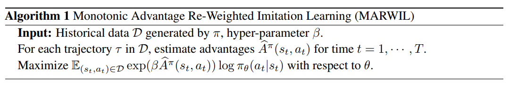
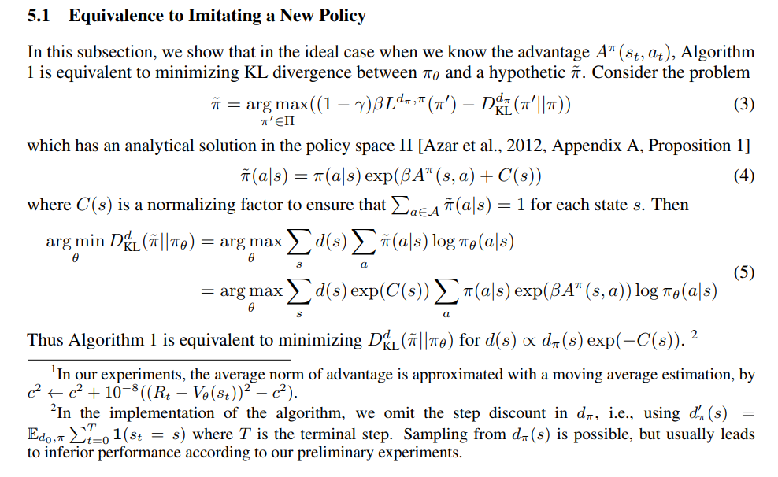

AILab的文章
Imitation learning without interacting with environment
出自NeurIPS 2018的文章Exponentially Weighted Imitation Learning for Batched Historical Data，由AILab独立完成，作者列表里Han Liu与前主任Tong Zhang榜上有名
文章研究的背景非常贴合我们的业务，目前主流的imitation learning方法，无论是早期的DAgger还是后来的各种GAIL类方法，训练的过程中都必须要和environment做交互，然而实践中很多情况下与环境交互的成本是非常高的，举几个例子
- OpenAI的Dota2，DeepMind的AlphaGo系列，一个是不完全信息的多智体博弈，一个是完全信息的MCTS模拟，采用的与环境交互方式都是self-play，因此不需要任何人类数据，agent可以真正意义上做到在与environment的交互中学习——为此付出的代价是学习过程非常的漫长，无论是OpenAI还是DeepMind都需要相当于人类上万年的学习时间来达到一个能看得过去的结果
- Robotics领域中，现实场景下做交互不能像在simulator里一样随心所欲，机械臂还是很容易坏掉的，以往robotics的人经常考虑的是用model-based learning方法进行学习，然而model-based的方法在复杂环境、大型MDP下复杂度极高
这篇文章的background setting如题所述：我们只有batched historical data，而不能用任何方法与environment做直接交互
Q1: How about directly train a policy model with supervised learning (behavior cloning)?
首先一个显而易见的问题在于distributional shift，其次我们的historical batched data中，每个state都会对应一个reward，这是reinforcement learning与supervised learning的一个重大的差异
If we can not make full use of the reward signal in data, the performance of behavior cloning will certainly be upper bouned by the batched historical data.
This paper tries to address the problem of learning a better policy than the expert policy with only batched historical data.
Algorithm and analysis

算法本身非常简单，具体实现时除了policy network $\pi_{\theta}$，我们还需要用supervised learning训练一个$V_{w}(s_{t})$，之前的paper中一般的做法是用cumulated reward $R_{t}$ 算: $A(s_{t},a_{t})=\mathbb{E}_{\pi}[R_{t}-V_{w}(s_{t})]$，文中作者表示他们的做法是$A(s_{t},a_{t})=(R_{t}-V_{w}(s_{t}))/c$, where $c$ is the exponential moving average norm of the advantage, to make the scale of $\beta$ stable across different environments，这种做法计算复杂度也相对较低

这段分析在看的时候就很头大，看rebuttal记录时发现reviewer和我提出了类似的疑问，主要有两点
Regarding the state distribution $d(s)$, I assume it is always referring to the state distribution of the behavior policy $\pi$. However, below line 146, when you say that it is imitating a new hypothetic policy $\tilde{\pi}$, shouldn’t the state distribution becomes the state-distribution resulting from $\tilde{\pi}$? The state distribution of $\tilde{\pi}$ and $\pi$ could be different.
我暂时没证出来$d^{\tilde{\pi}}(s)\propto{d^{\pi}(s)\exp(-C(s))}$
待更新…